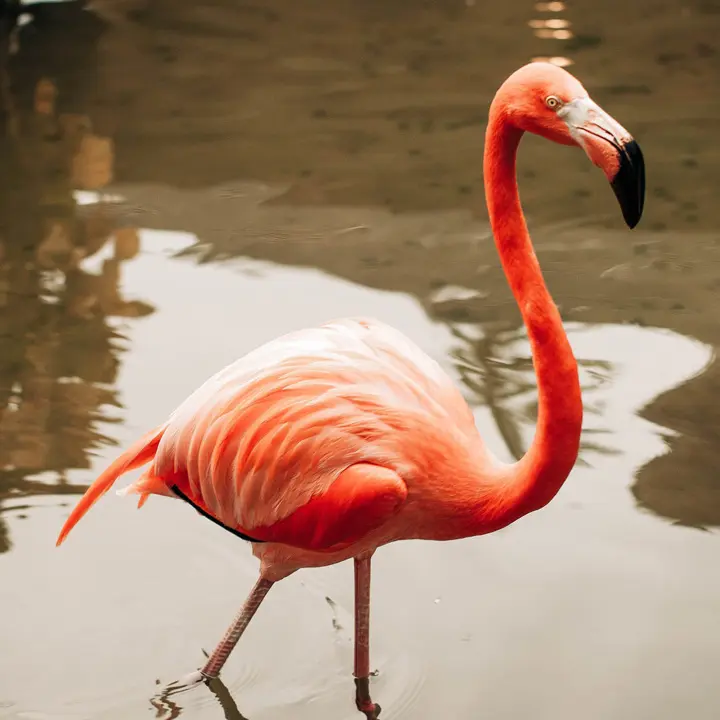

Interesting facts about Argentina
Interesting facts about Argentina presented here are related to the most diverse topics of both modern life and the past of the country, including (but not limited to) its history, heritage, nature, culture, science, and of course people. Argentina is a large country in South America famous for its music and tango dance. The territory of Argentina covers the Andes Mountains, glacial lakes, as well as waterfalls, wetlands, and flatlands, but not only. The country is also famous for the tallest mountain in the western hemisphere, the world's second-largest wetlands, the second-longest river in South America, and not only. Here you will find amazing, funny and of course interesting facts about Argentina for children, adults, the elderly and in general everyone who is interested in the world that surrounds us and the facts that it is filled with. Enjoy reading.Fact #1. Almost half of the population of Argentina lives around the country’s capital
The first one of fun facts about Argentina regards urbanization. Nearly half of the country’s inhabitants (15,5 out of 44 million) live in the area around the capital which is the city of Buenos Aires. Of these 15,5 million, almost 2,9 are living directly in this city.
Fact #2. In Argentina, there are more immigrants than local citizens
In Argentina, there are fewer local citizens than those who over the years have come here from Europe. The truth is that about 95% of the country's population consists mostly of descendants from Spain, Italy, Germany, England, and other European countries.
Fact #3. Argentina is one of the most biodiverse countries in the world
Another one of interesting facts about Argentina regards biodiversity. The country is home to 1,038 species of birds, 375 species of mammals, 338 species of reptiles, 162 amphibian species, plus numerous species of fish, insects, and many other creatures.
Fact #4. Argentina is home to the Perito Moreno Glacier
At the southern tip of Argentina, there is an archipelago The Tierra del Fuego, which has high mountains and cold weather, because of its proximity to Antarctica. The Tierra del Fuego is famous because it is home to the world-renowned Perito Moreno Glacier.
Fact #5. The world-famous Argentine flatlands are called… flatlands
The next one of fun facts about Argentina regards its world-famous flatlands, called Pampas. The Pampas is literally a flat fertile plain. What’s curious is that the word "Pampas" itself is one from the Indian language, which translates as "the flat surface".
Fact #6. The most popular sport in Argentina is football
The most watched and played sport in Argentina is football. The men's national team has won the FIFA World Cup, The FIFA Confederations Cup, and the Olympic Gold Medal. Also, Argentina is a motherland for such famous persons as Diego Maradona and Lionel Messi.
Fact #7. Argentina has its own kind of cowboys
Here’s another one of interesting facts about Argentina. Much like the cowboys in the USA, gauchos have become a symbol of Argentina's flatlands. Back in the days, they were known as brave and unruly people, living mostly off raising cattle and hunting.
Fact #8. The most money Argentina makes from citrus exports
Despite the severe economic problems in the 20th century, today, Argentina is considered to be one of the wealthiest countries in South America. The most money this country makes from exporting such foods as citrus, fruits, soybeans and not only.
Fact #9. The tallest mountain in the western hemisphere is located in Argentina

Here goes the next one of fun facts about Argentina. This country is home to the Andes mountain range. Its highest peak is mount Aconcagua. Standing 6,962 m (22,841 ft) tall, it’s the highest peak in South America and in the western hemisphere.
Fact #10. The first satellite in Latin America was built by Argentina
ARSAT-1 is a communications satellite built by the Argentine INVAP Company. It was launched into orbit on October 16, 2014. Its purpose is to provide a wide range of telephone and television services. ARSAT-1 is the first satellite built in Latin America.
These were amazing, funny and of course interesting facts about Argentina for children, adults, elderly and in general anyone who is curious and wants to know more. Share the link to this article on your social media accounts and/or messengers, leave comments and bookmark this website. Stay curious and see you in the next articles.